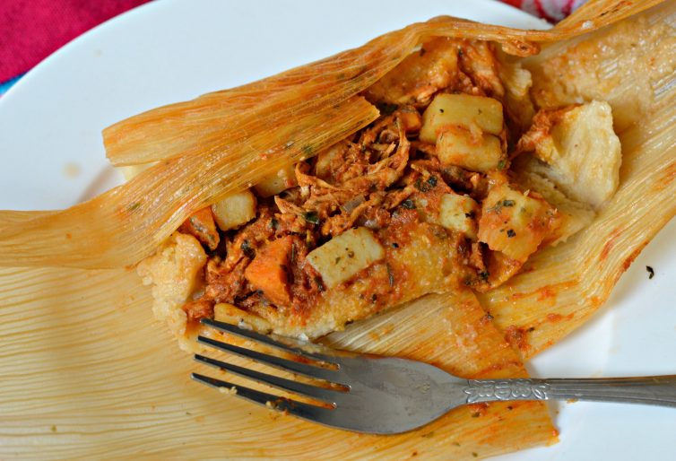
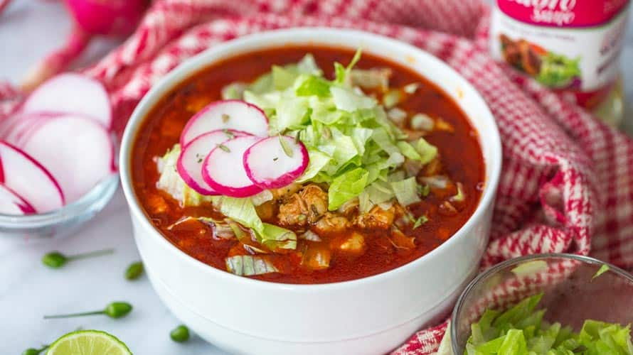

Recetas

Ingredientes
2 tazas de harina de maíz nixtamalizado
1/2 taza de manteca de cerdo
2 tazas de caldo de pollo
1 cucharadita de polvo para hornear
1 taza de pollo desmenuzado
1/2 taza de salsa verde (puedes comprarla o hacerla en casa)
Hojas de maíz (previa hidratación)
Sal al gusto
Asegúrate de tener a mano los siguientes utensilios antes de comenzar:
Un recipiente grande para mezclar
Batidora o batidor manual
Olla para cocer los tamales
Platos o una vaporera
Espátula de madera
Paso 2: Mezclar los Ingredientes Secos
Paso 3: Combinar Todo
Añadir Salsa
Mezcla el pollo desmenuzado con la salsa verde hasta que esté bien incorporado.
Armado de los Tamales
Paso 2: Formar los Tamales
paso 3:cocimiento

tacos de res
Ingredientes para hacer tacos de res
1 Cebolla
1 Pimiento rojo
1 Pimiento verde
Aceite de oliva
2 Dientes de ajo
1 Pizca de pimentón
1 ½ Cucharaditas de comino
500 Carne picada de calidad
250 ml Caldo de carne orgánica
12 Cáscaras de tacos de maíz
Salsa
2 Tomates maduros
1 Cebolleta
3 Ramitas de cilantro fresco
½ Lima
Cómo hacer tacos de res
1.Pela y corta la cebolla en dados, y luego desgrana y corta los pimientos en dados. Ablandarlos en una cucharada de aceite en una cacerola grande a fuego lento.
2.Pelar, cortar en rodajas finas y añadir el ajo, junto con el pimentón y el comino, y cocinar durante 2 minutos. Añada la carne y revuelva hasta que se dore.
Vierta el caldo, tape y cocine por 45 minutos, o hasta que se reduzca y sea delicioso. Precalentar el horno a 180ºC/350ºF/gas 4.
3.Para la salsa, cortar los tomates en trozos grandes, recortar y cortar en rodajas finas la cebolleta, y luego recoger y cortar en trozos grandes las hojas de cilantro. Combinar con el jugo de limón, luego sazonar cuidadosamente al gusto.
4.Para el guacamole, cortar a la mitad y destinar los aguacates, luego triturar la carne con un tenedor. Exprimir el zumo de lima, añadir la crema fresca, sazonar y mezclar todo suavemente.
5Extienda las cáscaras de taco en una bandeja de hornear y colóquelas en el horno durante 3 minutos hasta que estén crujientes. Llenar las tortillas con la carne, la salsa y guacamole o colocar todo y dejar que todos se sirvan y disfruten de este platilla.

pozole